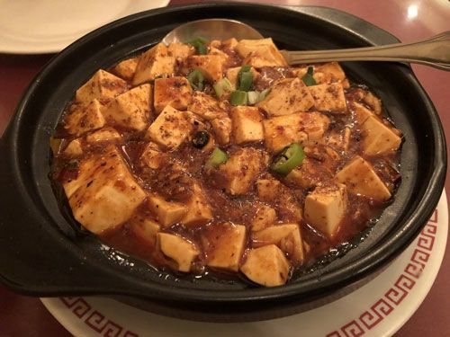

중국 음식
추천 메뉴
-  Mapo Tofu
-
 Pork Soup Dumpling
Pork Soup Dumpling
-
 Spicy Mala Beef Noodle Soup
Spicy Mala Beef Noodle Soup
영업 시간
- Friday: 11am-10:30pm
- Saturday: 11am-10:30pm
- Sunday: 11am-10:00pm
- Monday: 11am-10:00pm
- Tuesday: 11am-10:00pm
- Wednesday: 11am-10:00pm
- Thursday: 11am-10:00pm
위치
← 메인으로 돌아가기